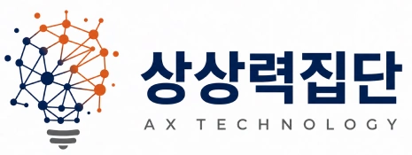
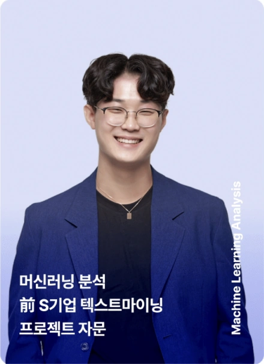
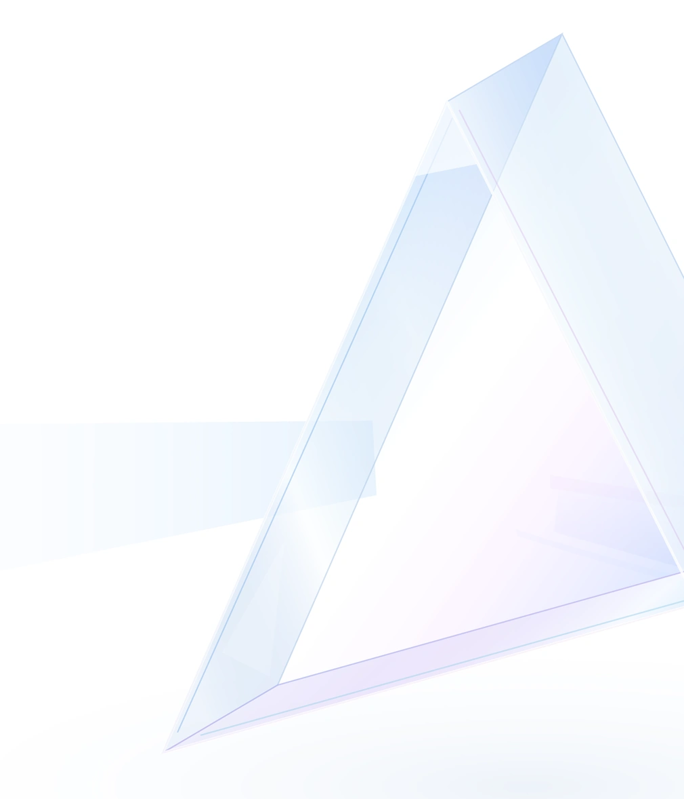

AI 리터러시전 직원
AI 기초 이해와 업무 활용 입문
AI의 기본 개념과 사용법을 익히고, 간단한 업무 실습으로 활용의 기초를 다집니다.
AI를 처음 접하는 구성원도 업무 환경에 맞는 입문 과정부터 시작할 수 있습니다.
주요 활동
- 생성형 AI의 기본 개념과 활용 사례 이해
- ChatGPT를 활용한 질문 작성·문서 요약 기초 실습
- 업무 환경에 따른 AI 활용과 스마트팩토리 기초 학습

AI를 우리 업무에 맞게 활용하려면 도구에 대한 이해와 실습이 필요합니다.
문서 작성부터 데이터 분석, 업무자동화까지 직무별 실습으로 실제 과제를
해결하는 힘을 기릅니다.
ChatGPT · OpenAI
Claude · Anthropic
Gemini · Google
Microsoft 365 Copilot
Solar · 문서 AI

AI의 기본 개념과 사용법을 익히고, 간단한 업무 실습으로 활용의 기초를 다집니다.
AI를 처음 접하는 구성원도 업무 환경에 맞는 입문 과정부터 시작할 수 있습니다.
문서 작성부터 데이터 분석, 업무자동화까지.
직무와 업종에 맞는 실제 업무 시나리오로 실습합니다.
AI 에이전트·LLM 고급 활용부터 전문 콘텐츠 제작까지.
전문 직무에 맞는 심화 과정을 선택합니다.
경영진의 AI 전략부터 조직의 도입 방향까지.
AX 전환을 다루는 임원·기획 과정을 운영합니다.
기관의 실제 과제를 대회 주제로 설정하고, 참가자 준비부터 운영·심사·결과까지
전 과정을 지원합니다.
모집 페이지와 홍보 콘텐츠를 통해 참가자
를 모집하고, 대회 일정과 참여 방법을 안내
합니다.
기관의 실제 업무와 해결이 필요한
과제를 분석 및 목적에 맞는 목표와
주제를 설계합니다
대회 목표에 맞는 평가 기준과 채점 체계로 우수 팀을 시상합니다.
대회에서 나온 결과물을 아카이브로 정리하고, 우수 사례와 심사 결과를 보고서·사례집으로 제작합니다.

진단 · 설계 · 실습 · 정착 네 단계로 진행합니다. 먼저 조직의 AI 활용 수준을 진단하고, 업종과 직무에 맞춰 과정을 설계한 뒤, 실습 70% 비중으로 교육하고, 교육 뒤에는 현업에 정착하도록 지원합니다.
과정은 AI 리터러시부터 직무별 AI 활용 교육, AI 에이전트·LLM 심화까지 네 수준으로 나뉩니다.
진단 · 설계 · 실습 · 정착 네 단계로 진행합니다. 먼저 조직의 AI 활용 수준을 진단하고, 업종과 직무에 맞춰 과정을 설계한 뒤, 실습 70% 비중으로 교육하고, 교육 뒤에는 현업에 정착하도록 지원합니다.
과정은 AI 리터러시부터 직무별 AI 활용 교육, AI 에이전트·LLM 심화까지 네 수준으로 나뉩니다.
진단 · 설계 · 실습 · 정착 네 단계로 진행합니다. 먼저 조직의 AI 활용 수준을 진단하고, 업종과 직무에 맞춰 과정을 설계한 뒤, 실습 70% 비중으로 교육하고, 교육 뒤에는 현업에 정착하도록 지원합니다.
과정은 AI 리터러시부터 직무별 AI 활용 교육, AI 에이전트·LLM 심화까지 네 수준으로 나뉩니다.
진단 · 설계 · 실습 · 정착 네 단계로 진행합니다. 먼저 조직의 AI 활용 수준을 진단하고, 업종과 직무에 맞춰 과정을 설계한 뒤, 실습 70% 비중으로 교육하고, 교육 뒤에는 현업에 정착하도록 지원합니다.
과정은 AI 리터러시부터 직무별 AI 활용 교육, AI 에이전트·LLM 심화까지 네 수준으로 나뉩니다.
진단 · 설계 · 실습 · 정착 네 단계로 진행합니다. 먼저 조직의 AI 활용 수준을 진단하고, 업종과 직무에 맞춰 과정을 설계한 뒤, 실습 70% 비중으로 교육하고, 교육 뒤에는 현업에 정착하도록 지원합니다.
과정은 AI 리터러시부터 직무별 AI 활용 교육, AI 에이전트·LLM 심화까지 네 수준으로 나뉩니다.
진단 · 설계 · 실습 · 정착 네 단계로 진행합니다. 먼저 조직의 AI 활용 수준을 진단하고, 업종과 직무에 맞춰 과정을 설계한 뒤, 실습 70% 비중으로 교육하고, 교육 뒤에는 현업에 정착하도록 지원합니다.
과정은 AI 리터러시부터 직무별 AI 활용 교육, AI 에이전트·LLM 심화까지 네 수준으로 나뉩니다.
진단 · 설계 · 실습 · 정착 네 단계로 진행합니다. 먼저 조직의 AI 활용 수준을 진단하고, 업종과 직무에 맞춰 과정을 설계한 뒤, 실습 70% 비중으로 교육하고, 교육 뒤에는 현업에 정착하도록 지원합니다.
과정은 AI 리터러시부터 직무별 AI 활용 교육, AI 에이전트·LLM 심화까지 네 수준으로 나뉩니다.